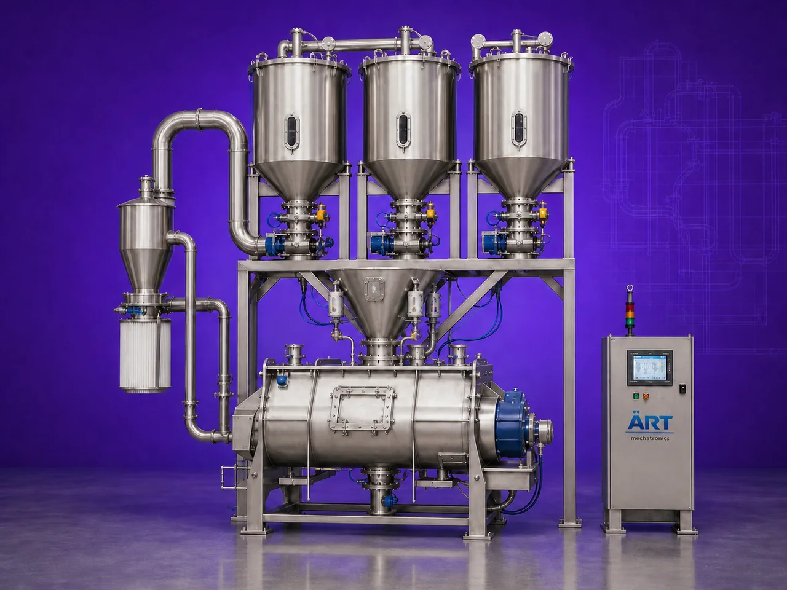

Mixer Automation System (Automatic Batching, Conveying & Industrial Mixing Plant)
A Mixer Automation System, also known as an Automatic Batching & Mixing System or Automated Industrial Mixing Plant, is a fully integrated processing solution designed for automatic storage, conveying, weighing, dosing, batching, and mixing of powders, granules, liquids, and bulk materials.

About the Mixer Automation System
The system consists of:
- Multiple storage tanks or hoppers mounted on an elevated platform
- Automatic conveying systems for material feeding
- Load cell-based weighing and batching arrangement
- Controlled discharge system
- Central mixer unit installed below the storage section
- PLC/SCADA automation system for recipe control and process management
Different raw materials are automatically conveyed into individual storage tanks, and based on the preset recipe, each material is discharged into the mixer according to the desired weight, quantity, and formulation ratio.
This creates a highly efficient:
- Automated batching process
- Accurate recipe control
- Uniform mixing system
- Reduced manpower requirement
- High production consistency
Mixer automation systems are widely used in industries such as:
• Food processing
• Pan masala & tobacco
• Pharmaceuticals
• Chemicals
• Nutraceuticals
• Spices
• Detergents
• Agro products
• Construction materials
where precision batching, high production efficiency, and repeatable product quality are essential.
ART Mechatronics offers fully customized mixer automation systems, engineered for high-speed industrial production, intelligent process control, accurate dosing, and reliable automated operation.
One machine, many names
Buyers search for this equipment under many terms — we manufacture all of them:
Working Principle of Mixer Automation System
Examples:
- Powders
- Granules
- Spices
- Chemicals
- Food ingredients
- Additives
Reduces manual handling and improves efficiency
Each ingredient is discharged according to:
- Desired weight
- Batch quantity
- Recipe proportion using:
- Load cells
- Weighing hoppers
- Automatic valves
Mixer types may include:
- Ribbon blender
- Paddle mixer
- Ploughshare mixer
- Conical mixer
- Agitator system
Types of Mixer Automation Systems
Industries Using Mixer Automation System
🌿 Pan Masala & Tobacco Industry
- Flavor and supari batching
🌶️ Spice Industry
- Automatic masala blending
🍃 Food Processing Industry
- Powder and ingredient mixing
💊 Pharmaceutical Industry
- API and formulation batching
⚗️ Chemical Industry
- Chemical powder dosing and blending
🧼 Detergent Industry
- Detergent powder batching
🏗️ Construction Material Industry
- Dry mortar and powder processing
🐄 Feed Industry
- Animal feed batching and mixing
Features & Advantages
- Fully automatic batching and mixing
- Accurate ingredient weighing and dosing
- Recipe-based PLC automation system
- Reduced manpower requirement
- High production consistency
- Fast batch processing
- Dust-free and hygienic operation
- Reduced material wastage
- Easy process monitoring and control
- Scalable for large industrial production
Technical Highlights
- Storage System:
- Multiple tanks / silos / hoppers
- Conveying Options:
- Screw conveyor
- Pneumatic conveying
- Bucket elevator
- Weighing System:
- Load cells
- Weigh hopper
- Mixer Type:
- Ribbon blender
- Paddle mixer
- Ploughshare mixer
- Conical mixer
- Control System:
- PLC
- SCADA
- HMI touch panel
- Operation:
- Fully automatic / semi-automatic
Turnkey Mixing Automation Solutions
ART Mechatronics offers:
- Complete mixer automation plant design
- Storage tank and silo systems
- Automatic conveying integration
- PLC & SCADA automation
- Load cell weighing systems
- Installation & commissioning
- After-sales service & AMC
Why Choose Art Mechatronics
- Expertise in industrial automation and process systems
- Customized plant solutions for multiple industries
- High-performance and reliable automation systems
- Energy-efficient and hygienic plant designs
- Proven industrial project execution capability
Applications
- Food Processing Plants
- Pan Masala Manufacturing Units
- Pharmaceutical Manufacturing Facilities
- Chemical Processing Plants
- Detergent Manufacturing Units
- Feed Processing Industries
- Construction Material Plants
Industries that use the Mixer Automation System
Related Mixing & Blending machines
Get pricing & specs for the Mixer Automation System
Share the product, target capacity, current process and plant location. These details help our engineers discuss the right machine or line configuration.
One partner, from design to start-up
ART Mechatronics designs, manufactures, installs and commissions your Mixer Automation System solution with regional presence in India, UAE and Thailand.